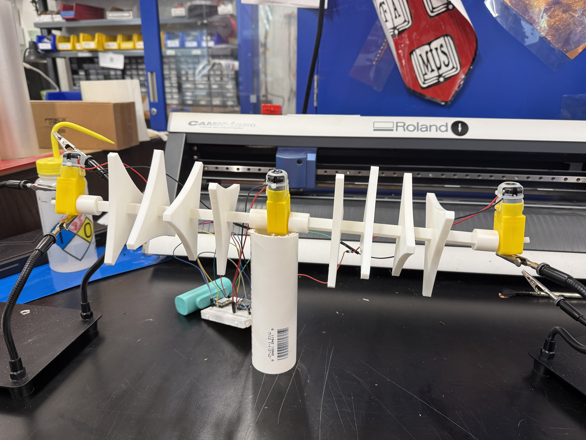
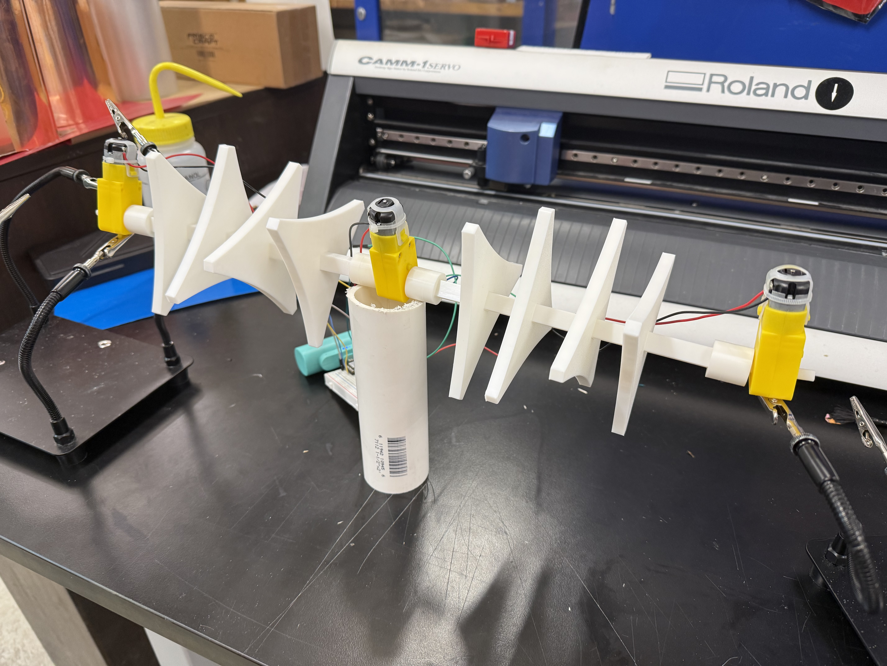
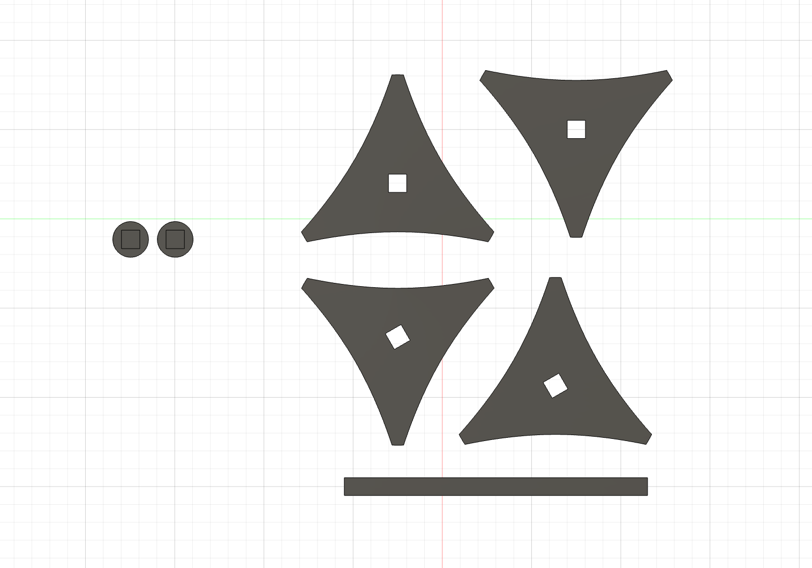
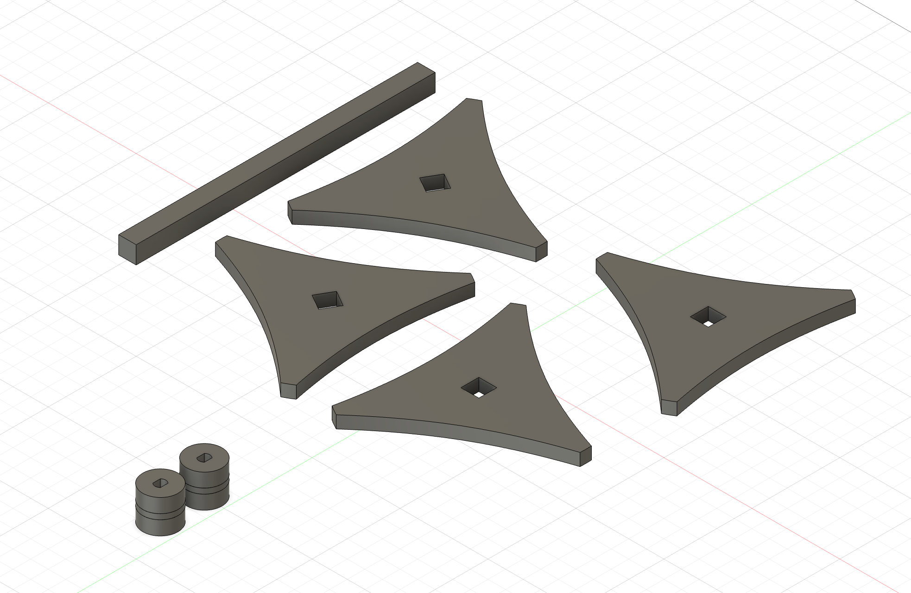

<div class="textcontainer">
<p class="margin"></p>
<h3>Final Project:</h3>
<h4>(For OLED see Week 6, for box creation and design see Week 5)</h4>
<video controls style="width: 200%; flex-shrink: 0; max-width: 400px;">
<source src="./Final.mp4" type="video/mp4">
Your browser does not support the video tag. <a href="./Final.mp4">Download the video</a> instead.
</video>
<p></p>
<p></p>
<h4>Why a Water Turbine?</h4>
<p class="margin">
In Alaska, many rural areas face high energy prices and barriers preventing them from having an equitable access to clean energy. As an engineer, I want to work to help provide more accessibiliy to clean energy for communities, that also takes the community's culture and environment into consideration. Because almost all rural villages in Alaska rely on traditional self-subsistence for food (hunting, fishing, etc.) it is important to have power grids and turbines that do not disrupt the natural environment. The ORPC Power Systems are designed to not disrupt fish migration.
I myself also wanted to become more familiar with how turbines and energy generation works, and will be applying these skills down the road as an Environmental Engineer.
</p>
<h4>How it works</h4>
<p class="margin">
The river current turns the turbines blades, shifting the central shaft inside the DC motor. This converts kinetic and potential energy into mechanical energy. Inside the generator, the rotational force spins the electromagnets inside a coil of copper wire. This movement of the magnets past the wire induces an electric current.
For this model, the energy produced does not go into a battery, but rather directly into the microcontroller's analog input. This is so that the microcontroller can read how much voltage is being generated instantaneously.
Finally, the microcontroller sends electric signals to the OLED carrying instructions on what number to display for the voltage and how to display it.
</p>
<h4>Hardware</h4>
<p class="margin">
Xiao ESP32 C3 Microcontroller
Two 2000 Ohm resistors (5% tolerance)
0.96-inch I2C OLED display module (resolution of 128x64 pixels)
Breadboard
3 DC gearbox motors
</p>
<h4>Turbine Blades</h4>
<p></p>
<p></p>
<a download href='./TurbineBlades.stl'>STL of Blades <a>
<h4>For Code see Week 6</h4>
</div>